A junction is a place where two or more distinct contours
meet or cross: the corner where a wall meets the floor, the T where one
object occludes another, the X where two wires cross. Junction type and
junction angle are used as predictors of scene categorization (Walther et al.,
2023), and mlvtoolbox reports them for every drawing.
This vignette explains how detect_junctions() finds
junctions, what an arm is, how the type and angles follow from
the arms, and where the default rule differs from the published MLV
toolbox. The drawings are small enough that every answer can be derived
by hand before reading the output.
Angles follow the drawing convention used throughout the package: degrees counterclockwise from the rightward x axis as seen on screen, with image y pointing down. An arm pointing right has orientation 0, up 90, left 180 and down 270.
From crossings to junctions
detect_junctions() works in four steps.
- Intersections. It finds every point where a segment of one contour meets or crosses a segment of a different contour. Before testing, each end of every segment may be extended by a small gap allowance, so a stroke that stops just short of another still meets it. Crossings within one contour and collinear overlaps are not junctions.
-
Merging. Intersections within
merge_radius(default 2 pixels) of each other are merged into one junction, transitively, so a chain of close crossings becomes a single junction at their mean position. -
Arms. The junction neighbourhood is the
union of open discs of radius
endpoint_radius(default 2 pixels) around the merged intersections. Each incident contour contributes one arm for each direction in which it leaves the neighbourhood. An arm’s orientation is the direction of the segment through which the contour leaves, pointing away from the junction. - Classification. A junction needs at least three arms. Sorting the arm orientations gives the angles, the gaps between consecutive arms, which sum to 360 degrees. Three arms make a Y when the largest gap is under 160 degrees, a T when it is between 160 and 200, and an Arrow when it exceeds 200; four arms make an X and five or more a Star.
Each row of the result is one junction, with its position, type,
smallest and largest gap (min_angle,
max_angle), and three list columns: arms
(sorted arm orientations), angles (gaps;
angles[k] runs from arms[k] to the next arm
counterclockwise) and members (the incident contour
segments).
t_shape <- mlv_drawing(list(bar = seg(6, 20, 34, 20), stem = seg(20, 20, 20, 34)),
width = 40, height = 40)
j <- detect_junctions(t_shape)
j[, c("x", "y", "type", "min_angle", "max_angle")]
#> x y type min_angle max_angle
#> 1 20 20 T 90 180
j$arms[[1]]
#> [1] 0 180 270
j$angles[[1]]
#> [1] 180 90 90The bar leaves the neighbourhood to the right (0 degrees) and to the left (180); the stem leaves downward (270). Sorted, the arms are 0, 180 and 270, so the gaps are 180, 90 and 90 degrees. The largest gap is 180, so this is a T.
A gallery of junction types
gallery <- list(
L = list(seg(20, 20, 34, 20), seg(20, 20, 20, 6)),
T = list(seg(6, 20, 34, 20), seg(20, 20, 20, 34)),
X = list(seg(6, 20, 34, 20), seg(20, 6, 20, 34)),
Y = list(rbind(c(ray(90), 20, 20), c(20, 20, ray(210))), seg(20, 20, ray(330))),
Arrow = list(rbind(c(ray(210), 20, 20), c(20, 20, ray(330))), seg(20, 20, ray(270))),
Star = list(seg(ray(0), ray(180)), seg(ray(60), ray(240)), seg(ray(120), ray(300))))
gallery <- lapply(gallery, mlv_drawing, width = 40, height = 40)
found <- lapply(gallery, detect_junctions)
data.frame(drawing = names(found),
junctions = vapply(found, nrow, 1L),
type = vapply(found, function(j) if (nrow(j)) j$type else "none", ""),
arms = vapply(found, function(j) if (nrow(j)) length(j$arms[[1]]) else 0L, 1L),
max_angle = vapply(found, function(j) if (nrow(j)) round(j$max_angle, 1) else NA, 1))
#> drawing junctions type arms max_angle
#> L L 0 none 0 NA
#> T T 1 T 3 180
#> X X 1 X 4 90
#> Y Y 1 Y 3 120
#> Arrow Arrow 1 Arrow 3 240
#> Star Star 1 Star 6 60
op <- par(mfrow = c(2, 3), mar = c(0.4, 0.4, 2.2, 0.4))
for (name in names(gallery)) {
j <- found[[name]]
title <- if (nrow(j)) sprintf("%s: %d arms, largest gap %g°", j$type,
length(j$arms[[1]]), round(j$max_angle))
else "L: 2 arms, not a junction"
plot(gallery[[name]], property = "junctions", arms = TRUE, arm_length = 8,
axes = FALSE, lwd = 2, main = title, cex.main = 1, font.main = 1)
if (nrow(j)) label_gaps(j, r = 5) else
text(27, 27, "corner of two\ncontours", cex = 0.8, col = "grey30")
}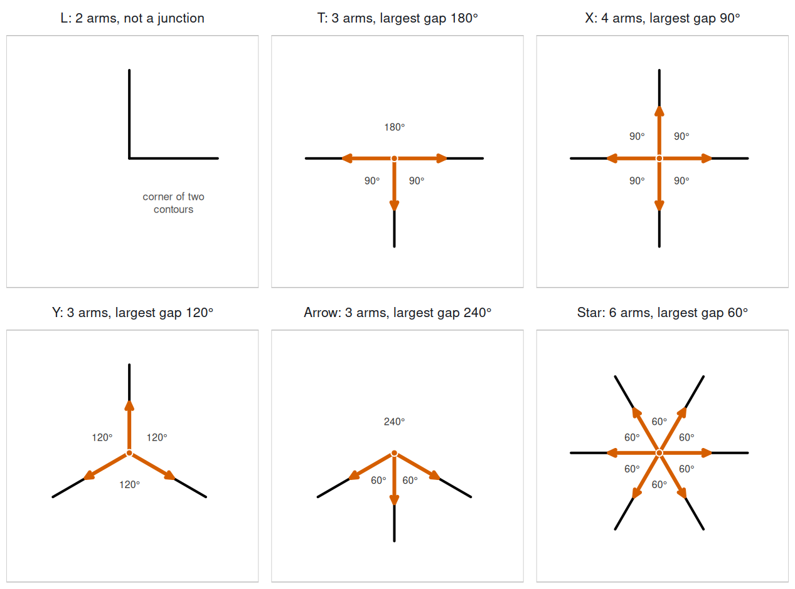
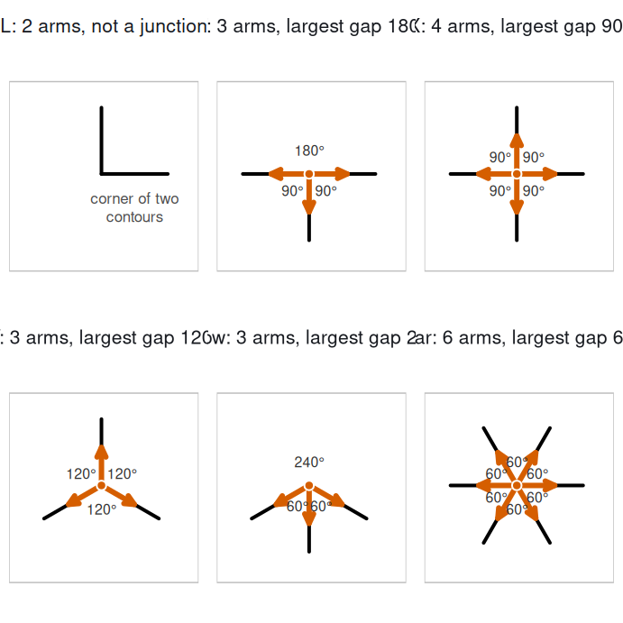
Arms (arrows) and the gaps between them for six two- and three-contour drawings. The L has only two arms and is not a junction; the three-arm drawings differ only in their largest gap.
par(op)The L is a meeting of two contours, but it has only two arms, so it is not reported; neither is a corner within a single contour. The Y, T and Arrow all have three arms and differ only in how those arms are spread: equal 120 degree gaps (Y), a straight bar with a stem (T, largest gap 180), and three arms within a half-plane (Arrow, largest gap 240). Four arms always make an X and the six arms of three crossing lines a Star, whatever their angles.
The gap allowance
Hand-drawn and traced contours rarely meet exactly. A stem that stops
half a pixel short of a bar is still a T to a viewer, so before
intersecting, each end of every segment may be extended by up to
absolute_epsilon pixels (default 1) and by at most
relative_epsilon of the segment’s own length (default 0.3);
the stricter of the two limits applies.
gaps <- mlv_drawing(list(bar = seg(4, 10, 36, 10),
near = seg(12, 10.5, 12, 22),
far = seg(28, 11.5, 28, 22)),
width = 40, height = 24)
detect_junctions(gaps)[, c("x", "y", "type")]
#> x y type
#> 1 12 10 TThe stem at x = 12 stops 0.5 pixels below the bar, inside the 1 pixel allowance, and forms a T at (12, 10). The stem at x = 28 stops 1.5 pixels short and forms no junction. The relative limit matters for short segments: a segment 2 pixels long can be extended by at most 0.6 pixels.
The allowance applies to both ends of every segment, not only to the free ends of a contour. A V whose vertex stops 0.5 pixels below the bar meets it through the extension of both of its segments and leaves the neighbourhood twice, so it forms an X:
v_shape <- mlv_drawing(list(seg(5, 10, 35, 10),
polyline(c(12, 20, 28), c(25, 10.5, 25))), 40, 30)
detect_junctions(v_shape)[, c("x", "y", "type")]
#> x y type
#> 1 20 10 X
op <- par(mfrow = c(1, 2), mar = c(0.4, 0.4, 2, 0.4))
for (x0 in c(12, 28)) {
zoom(gaps, c(x0, 12), 4, sprintf("gap %.1f px", if (x0 == 12) 0.5 else 1.5),
arm_length = 2.2)
y_end <- if (x0 == 12) 10.5 else 11.5
segments(x0, y_end, x0, y_end - 1, lty = 2, col = okabe[["blue"]], lwd = 2)
text(x0 - 0.3, y_end + 1.2, "1 px\nallowance", pos = 2, cex = 0.75,
col = okabe[["blue"]])
}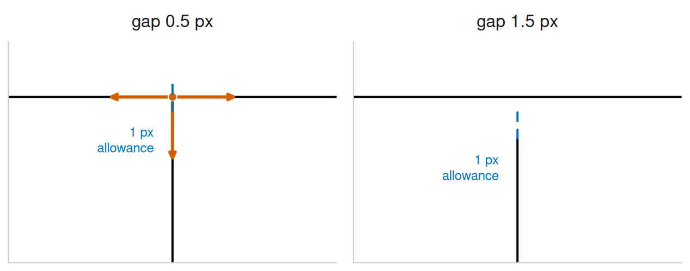
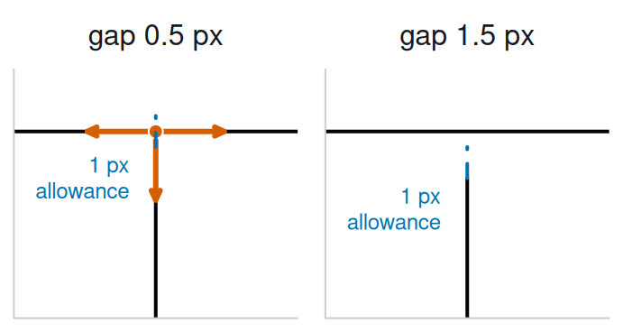
A stem 0.5 px short of the bar (left) meets it within the 1 px allowance (dashed); a stem 1.5 px short (right) does not.
par(op)Euclidean or Chebyshev distance
The allowance needs a way to measure distance along a segment. The
default, gap_metric = "euclidean", measures ordinary
length, so the answer does not depend on how the drawing is rotated. MLV
measures it as the larger of the horizontal and vertical change (the
Chebyshev distance, one raster step), and
gap_metric = "chebyshev" reproduces that. Along a diagonal,
one Chebyshev pixel is √2 ≈ 1.41 Euclidean pixels, so a diagonal stem
gets a longer reach than a horizontal or vertical one.
The drawing below has a stem at 45 degrees that stops 1.3 pixels (Euclidean) short of a horizontal bar. Rotating the drawing by 45 degrees makes the stem horizontal; the gap is still 1.3 pixels.
g <- 1.3
diagonal <- mlv_drawing(list(bar = seg(5, 20, 35, 20),
stem = seg(20 + g / sqrt(2), 20 - g / sqrt(2), 34, 6)),
width = 40, height = 40)
rotated <- rotate_drawing(diagonal, -45)
outcome <- function(d, metric) {
j <- detect_junctions(d, gap_metric = metric)
if (nrow(j)) j$type else "none"
}
results <- outer(c(diagonal = "diagonal", rotated = "rotated"),
c(euclidean = "euclidean", chebyshev = "chebyshev"),
Vectorize(function(r, m) outcome(if (r == "diagonal") diagonal else rotated, m)))
results
#> euclidean chebyshev
#> diagonal "none" "T"
#> rotated "none" "none"Under the Euclidean gap, 1.3 pixels exceeds the 1 pixel allowance in both orientations, so neither drawing has a junction. Under the Chebyshev gap the diagonal stem’s 1.3 pixel gap is a Chebyshev distance of 1.3 / √2 = 0.92, within the allowance, so it forms a T; after rotation the same gap measures 1.3 and is rejected. The junction count of a drawing measured with the Chebyshev gap can therefore change when the drawing is rotated.
op <- par(mfrow = c(2, 2), mar = c(0.4, 0.4, 2, 0.4))
for (r in c("diagonal", "rotated")) for (m in c("euclidean", "chebyshev")) {
d <- if (r == "diagonal") diagonal else rotated
d <- compute_contour_properties(d, gap_metric = m)
zoom(d, c(20, 20), 3, sprintf("%s stem, %s: %s", r, m, results[r, m]),
arm_length = 1.6)
z <- d$contours[[2]][1, ]
u <- (z[1:2] - z[3:4]) / sqrt(sum((z[1:2] - z[3:4])^2))
reach <- if (m == "euclidean") 1 else 1 / max(abs(u))
segments(z[1], z[2], z[1] + reach * u[1], z[2] + reach * u[2],
lty = 2, lwd = 2, col = okabe[["blue"]])
text(17.3, 22.4, sprintf("dashed: reach %.2f px", reach), adj = 0,
cex = 0.75, col = okabe[["blue"]])
}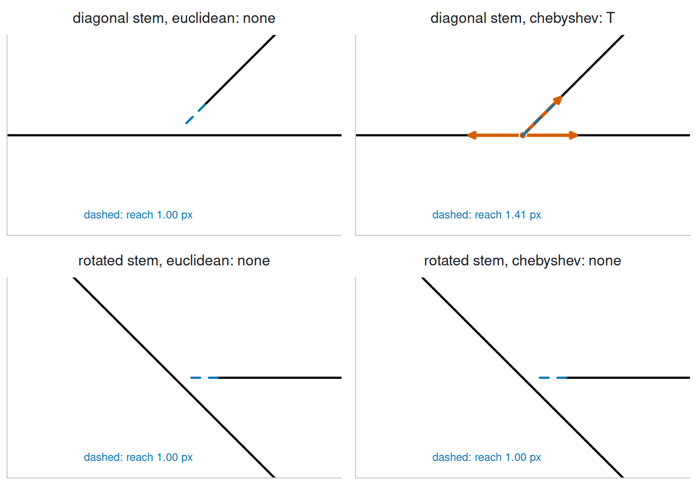
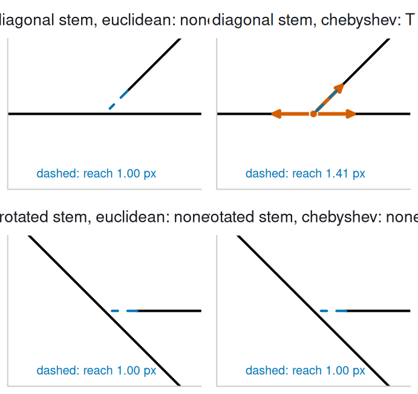
The same 1.3 px gap under the two metrics, before (top) and after (bottom) a 45 degree rotation. The dashed segment shows how far each metric lets the stem reach; only the Chebyshev reach on the diagonal (1.41 px) closes the gap.
par(op)The arm rule
The arms of a junction are the directions in which contours leave the junction neighbourhood, not the segments that touch it. The definition is chosen so that three things a viewer ignores do not change the answer: a stroke that overshoots its target slightly, a stroke that was split into pieces, and the vertex at which a closed outline happens to start.
arm_cases <- list(
overshoot_1 = mlv_drawing(list(seg(5, 10, 35, 10), seg(20, 9, 20, 30)), 40, 32),
overshoot_3 = mlv_drawing(list(seg(5, 10, 35, 10), seg(20, 7, 20, 30)), 40, 32),
split = mlv_drawing(list(seg(5, 20, 19.5, 20), seg(19.5, 20, 20.5, 21),
seg(20.5, 21, 35, 21)), 40, 32),
closed = mlv_drawing(list(seg(5, 15, 25, 15),
polyline(c(15, 15, 35, 25, 15), c(16, 5, 5, 25, 16))), 40, 32))
arm_found <- lapply(arm_cases, detect_junctions)
vapply(arm_found, function(j) if (nrow(j)) j$type else "none", "")
#> overshoot_1 overshoot_3 split closed
#> "T" "X" "none" "X"- Overshoot. A stem that crosses the bar by 1 pixel ends inside the 2 pixel neighbourhood, so it leaves only downward: three arms, a T. Crossing by 3 pixels, it leaves upward as well, and the junction is an X.
- Split polyline. One near-straight stroke stored as three contours, with a short middle piece, touches itself at two points 1.4 pixels apart. They merge into one neighbourhood, and only two arms leave it (left and right), so there is no junction.
- Closed contour. A quadrilateral whose first vertex, (15, 16), lies 1 pixel below a bar crossing. The outline leaves the neighbourhood twice, upward and down to the right, so with the bar’s two arms this is an X. The start vertex lies inside the neighbourhood, but closed contours are followed around their start, so the answer is the same for every start vertex.
quad <- cbind(c(15, 15, 35, 25), c(16, 5, 5, 25))
start_types <- vapply(1:4, function(k) {
v <- quad[c(k:4, seq_len(k - 1)), ]
d <- mlv_drawing(list(seg(5, 15, 25, 15), polyline(c(v[, 1], v[1, 1]), c(v[, 2], v[1, 2]))), 40, 32)
detect_junctions(d)$type
}, "")
start_types
#> [1] "X" "X" "X" "X"
centres <- list(overshoot_1 = c(20, 10), overshoot_3 = c(20, 10),
split = c(20, 20.5), closed = c(15, 15))
titles <- c(overshoot_1 = "1 px overshoot: T", overshoot_3 = "3 px overshoot: X",
split = "split stroke: no junction", closed = "closed outline: X")
piece_cols <- list(overshoot_1 = "black", overshoot_3 = "black",
split = okabe[c("blue", "purple", "green")],
closed = "black")
intersections <- list(overshoot_1 = rbind(c(20, 10)), overshoot_3 = rbind(c(20, 10)),
split = rbind(c(19.5, 20), c(20.5, 21)), closed = rbind(c(15, 15)))
op <- par(mfrow = c(2, 2), mar = c(0.4, 0.4, 2, 0.4))
for (name in names(arm_cases)) {
zoom(arm_cases[[name]], centres[[name]], 5, titles[[name]], arm_length = 3.4,
col = piece_cols[[name]])
p <- intersections[[name]]
disc(p[, 1], p[, 2], 2)
if (name == "closed") {
points(15, 16, pch = 4, cex = 1.2, lwd = 2)
text(14.6, 16.6, "start\nvertex", pos = 2, cex = 0.75)
}
}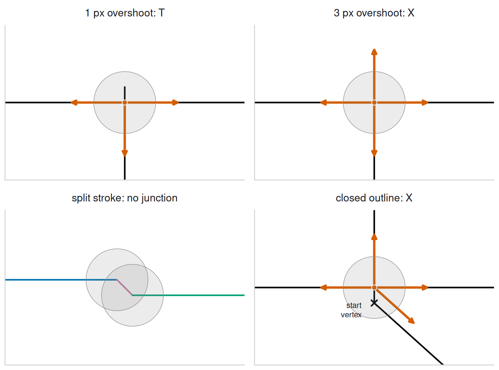
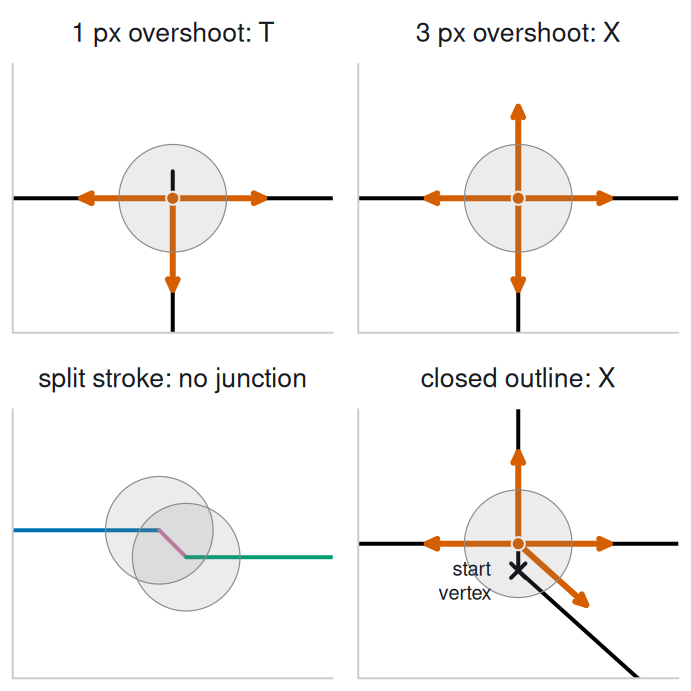
The arm rule on four drawings. Shaded discs are the junction neighbourhood (radius 2 px). A 1 px overshoot ends inside it and adds no arm; a split stroke leaves it only twice; a closed outline that starts inside it still leaves twice.
par(op)A contour that ends inside the neighbourhood contributes no arm in that direction, and a contour that passes straight through contributes one arm on each side however many of its vertices lie inside. The arm direction is the direction of the segment through which the contour leaves, so the angles between straight arms are exact and do not depend on where the merged junction position falls.
Merging nearby crossings
Two crossings within merge_radius of each other,
including exactly merge_radius apart, are one junction.
Merging is transitive: crossings at 0, 1.8 and 3.6 pixels along a bar
merge into one junction, even though the outer two are 3.6 pixels apart,
because each is within 2 pixels of the middle one.
two_stems <- function(separation) {
mlv_drawing(list(seg(5, 20, 35, 20), seg(18, 8, 18, 32),
seg(18 + separation, 8, 18 + separation, 32)), 40, 40)
}
merged <- detect_junctions(two_stems(1.5))
apart <- detect_junctions(two_stems(2.5))
merged[, c("x", "y", "type", "min_angle")]
#> x y type min_angle
#> 1 18.75 20 Star 0
merged$arms[[1]]
#> [1] 0 90 90 180 270 270
apart[, c("x", "y", "type", "min_angle")]
#> x y type min_angle
#> 1 18.0 20 X 90
#> 2 20.5 20 X 90
chain <- mlv_drawing(list(seg(5, 20, 45, 20), seg(18, 8, 18, 32),
seg(19.8, 8, 19.8, 32), seg(21.6, 8, 21.6, 32)), 50, 40)
detect_junctions(chain)[, c("x", "type")]
#> x type
#> 1 19.8 StarWith the stems 1.5 pixels apart, the two crossings merge into one
junction at their midpoint, x = 18.75. It has six arms: the bar’s two
and both stems’ up and down arms, so it is a Star. The two upward arms
point the same way, so the smallest gap, min_angle, is 0
degrees. At 2.5 pixels apart the crossings stay separate and each is an
X. A junction with gaps of 0 degrees is a sign that nearly parallel
contours were merged; if that is not what the stimulus means, reduce
merge_radius.
op <- par(mfrow = c(1, 2), mar = c(0.4, 0.4, 2, 0.4))
for (s in c(1.5, 2.5)) {
d <- two_stems(s)
zoom(d, c(18 + s / 2, 20), 5.5, sprintf("stems %.1f px apart: %s", s,
paste(detect_junctions(d)$type, collapse = " + ")), arm_length = 3.2)
disc(c(18, 18 + s), c(20, 20), 1, col = NA, border = okabe[["blue"]], lty = 2)
if (s < 2) text(18 + s / 2 + 1, c(16.2, 23.8), "2 arms", pos = 4, cex = 0.75)
}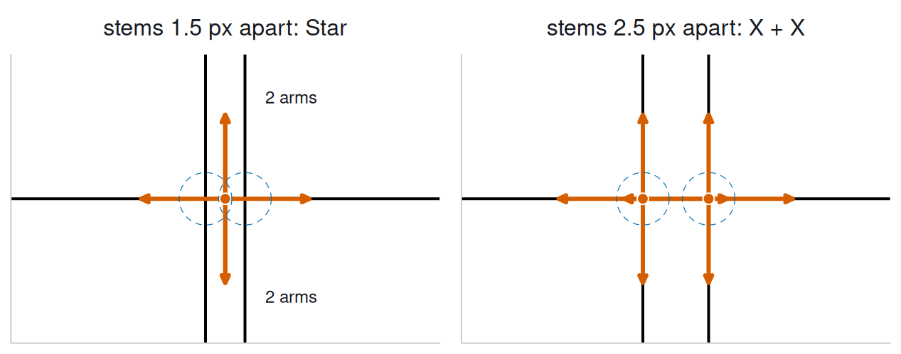
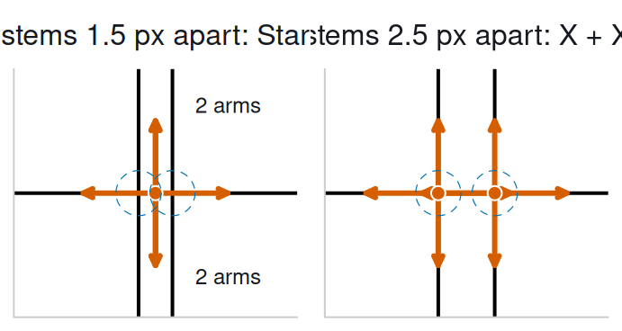
Discs of radius merge_radius / 2 around each crossing: when they overlap or touch, the crossings merge. At 1.5 px the two crossings form one six-arm Star; at 2.5 px they remain two X-junctions.
par(op)Where rule = "mlv2023" differs
rule = "mlv2023" reproduces the junction code of the MLV
MATLAB toolbox (commit f12418a), including the behaviours in which the
default rule differs, as recorded in the package’s differences
register. Use it only when your numbers must match published MLV
values. Against junctions stored by the original lab’s MATLAB runs on
3,017 drawings, it reproduces 395,125 of 395,134 exactly, while the
default rule agrees on 90.1%, every difference being attributed to a
recorded MLV difference or a package definition (qualification results
recorded in docs/PARITY.md,
not recomputed here). The three drawings below show where the
definitions part.
mlv_cases <- list(
diagonal_t = mlv_drawing(list(seg(10, 10, 30, 30), seg(20, 20, 30, 10)), 40, 40),
vertex_overshoot = mlv_drawing(list(seg(5, 10, 35, 10),
polyline(c(20, 20, 20), c(9, 11, 30))), 40, 32),
closed_start = arm_cases$closed)
compare <- do.call(rbind, lapply(names(mlv_cases), function(name) {
e <- detect_junctions(mlv_cases[[name]])
m <- detect_junctions(mlv_cases[[name]], rule = "mlv2023")
data.frame(case = name, exit_type = e$type, exit_min = round(e$min_angle, 1),
mlv_type = m$type, mlv_min = round(m$min_angle, 1))
}))
compare
#> case exit_type exit_min mlv_type mlv_min
#> 1 diagonal_t T 90 T 0
#> 2 vertex_overshoot T 90 X 0
#> 3 closed_start X 42 T 90-
Diagonal T (MLV-M007). A bar from (10, 10) to (30,
30) with a stem from its midpoint up and to the right. The stem is
perpendicular to the bar, so the gaps are 90, 90 and 180 degrees and
min_angleis- MLV measures arms that pass through the junction with y pointing up
but arms that end there with y pointing down. The bar’s arms, at 135 and
315 degrees, are mirrored to 225 and 45 degrees, so one of them
coincides with the stem and
min_angleis - The type is still T, so the difference shows only when angles are analysed.
- MLV measures arms that pass through the junction with y pointing up
but arms that end there with y pointing down. The bar’s arms, at 135 and
315 degrees, are mirrored to 225 and 45 degrees, so one of them
coincides with the stem and
- Overshoot with a vertex inside the neighbourhood (MLV-M024). The stem overshoots the bar by 1 pixel, as before, but is drawn as two segments with a vertex at y = 11. MLV makes every segment of a contour inside the neighbourhood an arm, so both stem segments count and the T becomes an X with a 0 degree gap. The default rule follows the contour out of the neighbourhood and finds one downward arm.
- Closed contour starting inside the neighbourhood (MLV-M026). MLV treats a closed contour as ending at its first vertex. Starting at (15, 16), the outline appears to end inside the neighbourhood and loses an arm, so MLV reports a T; started at any other vertex it reports an X. The default rule reports X for every start vertex.
vapply(1:4, function(k) {
v <- quad[c(k:4, seq_len(k - 1)), ]
d <- mlv_drawing(list(seg(5, 15, 25, 15), polyline(c(v[, 1], v[1, 1]), c(v[, 2], v[1, 2]))), 40, 32)
detect_junctions(d, rule = "mlv2023")$type
}, "")
#> [1] "T" "X" "X" "X"
mlv_centres <- list(diagonal_t = c(20, 20), vertex_overshoot = c(20, 10),
closed_start = c(15, 15))
op <- par(mfrow = c(3, 2), mar = c(0.4, 0.4, 2, 0.4))
for (name in names(mlv_cases)) for (rule in c("exit", "mlv2023")) {
d <- compute_contour_properties(mlv_cases[[name]], rule = rule)
j <- d$junctions
zoom(d, mlv_centres[[name]], 6, sprintf("%s: %s, min angle %g°",
if (rule == "exit") "default" else "mlv2023", j$type, round(j$min_angle)),
arm_length = 4)
label_gaps(j, r = 2.4, cex = 0.7)
}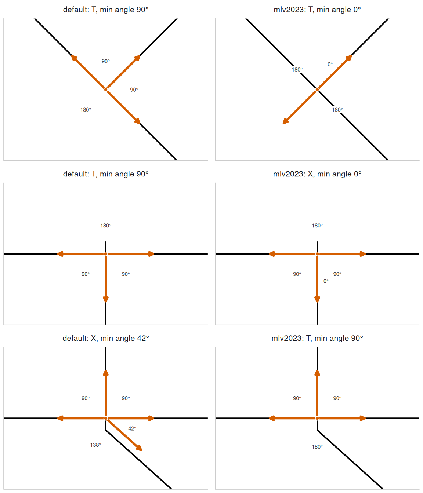
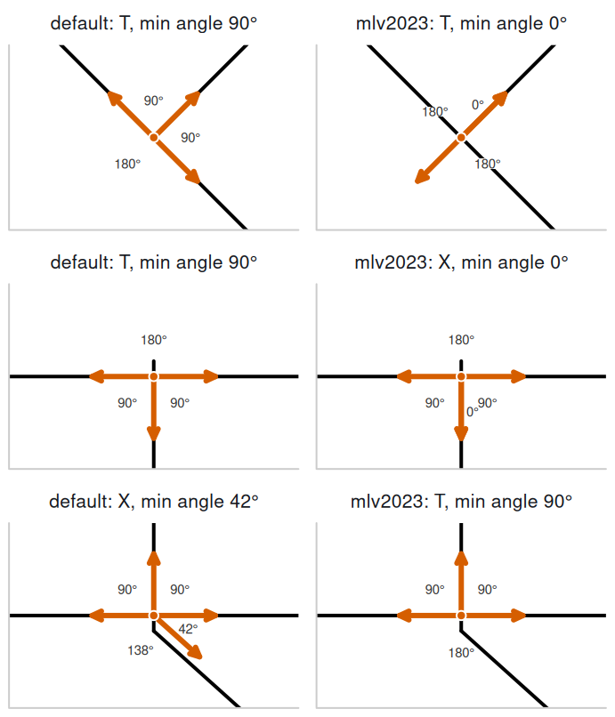
The same drawings under the default rule (left) and rule = “mlv2023” (right), with each rule’s arms drawn. MLV mirrors the diagonal bar’s arms so that one coincides with the stem (top), adds an arm per segment of the overshooting stem (middle), and loses an arm when a closed contour starts inside the neighbourhood (bottom).
par(op)Under rule = "mlv2023" the arms column
holds the directions MLV assigns, in MLV’s own conventions, which is why
the figure can show them. The same rule also turns the split stroke of
the previous section into a T (T), because its short middle piece is
attached by its start point. rule = "mlv2023" always uses
the Chebyshev gap.
What junction statistics measure
Junction features enter analyses in three forms, all computed from the table above.
-
Type counts.
contour_statistics(x, "junction_type")counts junctions of each type, T, Y, X, Arrow and Star, in that order. -
Angle distribution.
contour_statistics(x, "junction_angle")is a histogram of each junction’s smallest gap,min_angle, over 0 to 120 degrees (no junction can have a smallest gap above 120, since at least three gaps sum to 360). -
Density.
average_property(x, "junctions")is the number of junctions per 10,000 pixels of contour length, andnormalize = TRUEexpresses the histograms in the same units. Junction counts grow with the amount of ink, so density is usually the quantity to compare between drawings.
Per contour (by = "contour", and in
feature_table()), each junction is counted once for every
contour that takes part in it. To see these numbers on known input,
place the six gallery drawings side by side on one canvas:
shift <- function(z, dx, dy) { z[, c(1, 3)] <- z[, c(1, 3)] + dx; z[, c(2, 4)] <- z[, c(2, 4)] + dy; z }
offsets <- expand.grid(dx = c(0, 40, 80), dy = c(0, 40))
cells <- lapply(seq_along(gallery), function(k)
lapply(gallery[[k]]$contours, shift, offsets$dx[k], offsets$dy[k]))
sheet <- mlv_drawing(unlist(cells, recursive = FALSE), width = 120, height = 80)
types <- contour_statistics(sheet, properties = "junction_type")
types[, c("label", "value", "units")]
#> label value units
#> 1 T 1 count
#> 2 Y 1 count
#> 3 X 1 count
#> 4 Arrow 1 count
#> 5 Star 1 count
angles <- contour_statistics(sheet, properties = "junction_angle")
angles[, c("lower", "upper", "value")]
#> lower upper value
#> 1 0 15 0
#> 2 15 30 0
#> 3 30 45 0
#> 4 45 60 0
#> 5 60 75 2
#> 6 75 90 0
#> 7 90 105 2
#> 8 105 120 1
average_property(sheet, "junctions")
#> [1] 170.068The sheet holds one junction of each type; the L contributes none. The density is 5 junctions over 294 pixels of contour, 170.1 per 10,000 pixels.
With the default 8 bins the angle histogram’s edges fall every 15 degrees, exactly at 60, 90 and 120 degrees, the smallest gaps of the commonest junctions. A gap that falls on an edge enters the upper bin. A gap computed from trigonometry can come out a rounding error either side of the exact angle; on the computer that built this page the smallest gaps of the Y, Arrow and Star above are 119.99999999999997, 60, 59.999999999999993 degrees. Every histogram therefore treats a value within 1e-9 × max(1, |edge|) of a bin edge as lying on the edge, so mathematically equal gaps share a bin on every platform: here the Arrow and Star (60) share the bin from 60 to 75 degrees, the T and X (90) the bin from 90 to 105, and the Y (120) the last bin. The tolerance is far above rounding residue and far below any difference between real gaps. A bin count whose edges avoid the expected angles, such as 5 (edges at 0, 24, 48, 72, 96 and 120 degrees), keeps the bins away from the edges altogether:
contour_statistics(sheet, properties = "junction_angle", bins = 5)[, c("lower", "upper", "value")]
#> lower upper value
#> 1 0 24 0
#> 2 24 48 0
#> 3 48 72 2
#> 4 72 96 2
#> 5 96 120 1Choosing settings
- Keep the defaults (
rule = "exit", Euclidean gap, 1 pixel allowance, 2 pixel merge and neighbourhood radii) for new work. They do not depend on contour direction, numbering, closed-contour start vertex or rotation. - Scale
absolute_epsilon,merge_radiusandendpoint_radiuswith the stroke width and resolution of your stimuli. In a feature specification (feature_spec(junction = list(...))) they are stated in the specification’s spatial units and converted for each drawing. - Use
rule = "mlv2023"only to reproduce published MLV values.
Where to go next
-
vignette("mlv-compatibility", package = "mlvtoolbox"): the published-compatible settings for every stage and what each default changes. -
vignette("getting-started", package = "mlvtoolbox"): segment measurements, histograms and feature specifications. -
vignette("medial-axis", package = "mlvtoolbox"): medial-axis symmetry scores.